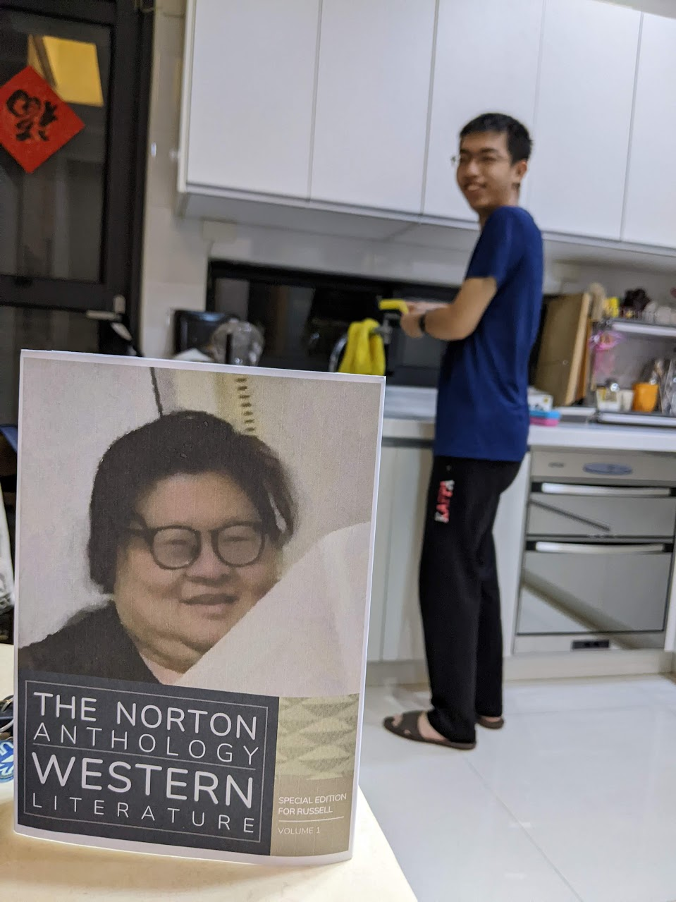
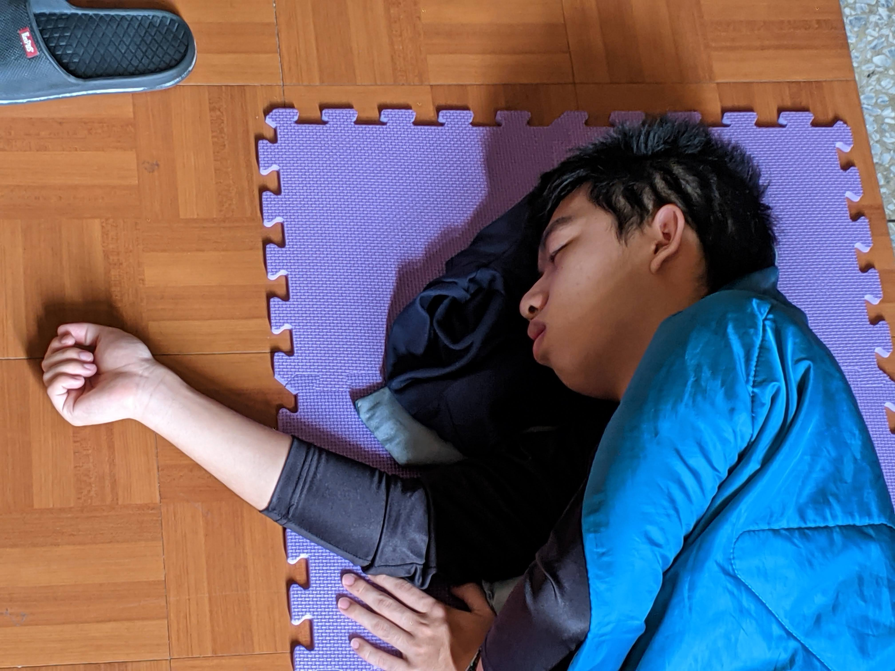

── 李定祐專訪
彰師大英語學系的李定祐出身公務員世家，自小便備受家庭期待，父母三不五時就會要他吟個幾句、奏個幾曲，琴棋書畫樣樣學，無奈自身學藝不精，老是將王之渙的「欲窮千里目」，念作「芋頭西米露」，抑或是學了法文卻半途而廢，數字數到十一就沒轍了。如此盲目糊塗的生活，就這樣渾渾噩噩的過了十八年，直到進到彰師大，才真正改變了他。
考前一個月的準備，成為李定祐與彭老師命中注定相見的機會。高中三年所經歷的風風雨雨，將要在指考這一天結成豐碩的果實，但雨真的太大了，造成洪災，樹根都被連根拔起，眼看自己就要被沖入台灣海峽，他毫不遲疑的伸長了雙臂，緊緊環抱住眼前唯一可見的黑色柱子。奇蹟般的，頓時間滾滾洪流消逝，被泥沙沖刷的雙眼總算能勉強睜開，無奈消沉的意志卻讓他抬不起頭來，映入眼簾的是兩本綑在柱子腳邊，封面有個女人的書。
「那時我還真的以為死定了，因為當下的我完全使不上力，指考的洪流十分駭人。但奇蹟就那樣發生了。」李定祐回憶道，當他又再一次仔細端倪，才發現他用最後零星力氣抱住的，似乎不是柱子。
彰師大英語學系 龔會議 副教授兼英語系主任：「我從來沒為我的學生如此大哭一場過，直到讀完這篇專訪。李定祐其實是我的學生，他上課時總是提不起精神，或是把我的話當耳邊風，不停找隔壁同學聊天。原先我以為他是個叛逆的學生，不過這篇專訪，（又再度熱淚盈眶）確實讓我看到他不一樣的一面，稱不上是outstanding，但我想送給他的字是interesting。」
您可以透過下方播放器來聆聽李定祐專訪 Podcast。
您可以透過下方播放器來聆聽李定祐專訪的有聲書。
深入淺出的敘事手法，帶您了解彭老師與李定祐之間的動人故事，以及如何改變一個人的生命軌跡。
除了文字專訪外，還提供 Podcast 與有聲書，讓您可以隨時隨地聆聽這段溫暖人心的故事。
無論您是否曾經歷類似的人生轉折，這個故事都能引起共鳴，帶給您面對挑戰的勇氣與動力。